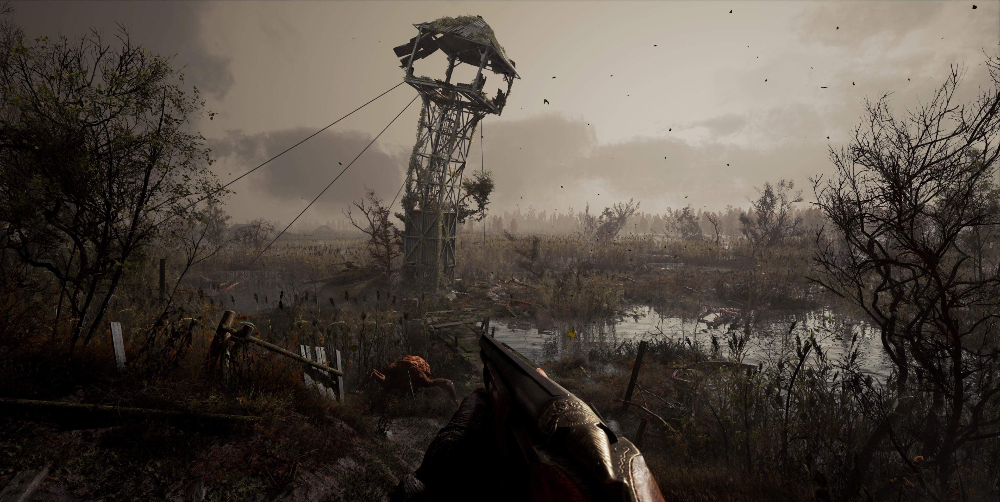
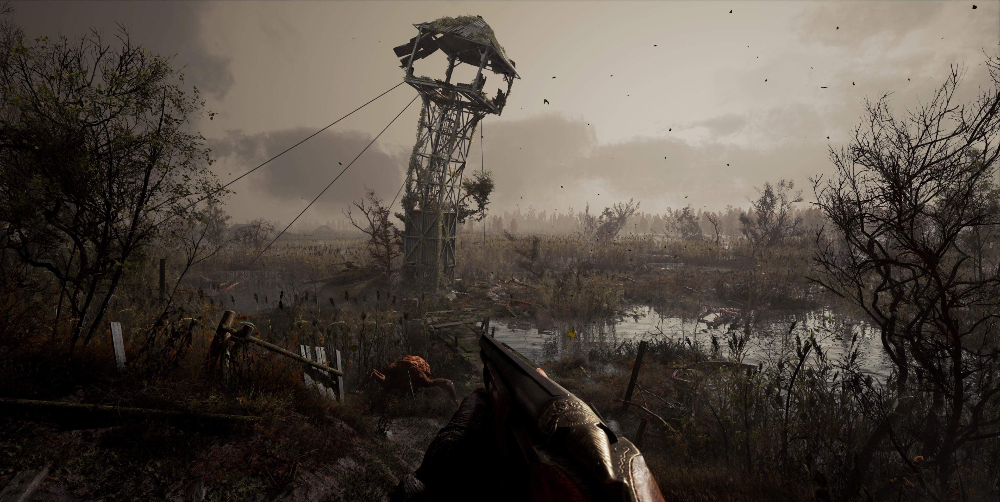

THE STORY OF 32
Radiation measured above the ground, brought the late to the fate of the victims of the 32 'disaster. Many people stayed too long. Disappointingly too long. The wold's value has changed. Everything had. Money has become just a piece of paper, the ones who lived top of the hierarchy those, who have enjoyed a life without consequences. They had to say goodbye for their influence in the first weeks. The average citizen with every benefit he could get in his life with the cost of hard work, became destitute in a matter of moments. The cacophony of the children has lost from kindergartens, playgrounds have never been like this haunting image, this lack of lifes. So far, rats and worms have lived underground. Now...so do we.